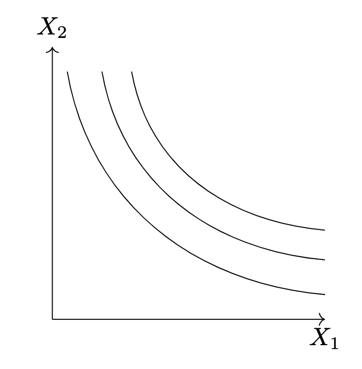

Utility
Overview
The aim of this lecture is to illustrate how we can model individual preferences.
If you recall from your Principles of Microeconomics course, the demand function represents consumers' willingness and ability to pay for a good or service. Up to now in the course, we've focused on ideas that enable us to model a consumer's ability to pay (choice set, parameterized constraints function, feasibility set). In this lecture, we turn our attention to modeling willingness.
Preferences
We begin with the idea that consumers have preferences. That is, they like certain goods and services more than others - hopefully an idea that you can relate to! We're going to add some "structure" to this idea of preferences. That is, we're going to assume that a consumer's preference is both complete and consistent. By complete, we mean that a consumer rank any two goods or services. You give the consumer the choice between two different podcasts on Spotify, they should be able to tell you which one they prefer or if there indifferent between the two. By consistent we mean that if for example you prefer the song When You We're Young to Lion Man and prefer Lion Man to Mr. Brightside, then you should also prefer When You We're Young to Mr. Brightside.1
Question 1
Is it possible to have preferences over the frequency with which you play certain songs?"
Utility Function
We're going to represent preferences via a function known as the utility function whose signature we write below. The utility function takes elements from the choice set and maps them in how many "utils" the individual receives from that element.
Utils
This notion of utils is a a bit handwavy as it's not thing that's ever observed. For instance, if I see that you are deciding between an apple and an orange, I see that you choose the apple over the orange then I can conclude that you prefer an apple to an orange. But I cann't determine how much satisfaction you receive from an apple compared to the orange. We're willing to work with this level of handwavyness, though, because all we really care about the utility function is that it gives us a mathematically convient way to think about preferences. That is, by assuming that the consumer has complete and consistent preferences, we're assume that the consumer can rank each and every object. Therefore, any utility function that preseves that ranking will be a mathematically convient function to work with.
Functional Forms
There are many popular functional forms for the utility function. For example, if we want to model the fact that a consumer is indifferent between some amount of good 1 and some amount of good 2, we can express this with the following utility function
Question 2
What would the levels sets of this type of utility function look like?
Or, we may want to capture the idea that consumer views the goods as perfect compliments. That is, they only get utility from the goods when consumed in a constant proportion.
Question 3
What would the levels sets of this type of utility function look like?
Or any of the following functional forms:
Question 4
What would the levels sets of this type of utility function look like?
Indifference Curves
It turns out that there is a name and an important economic idea captured in the level sets of the utility function that you have been writing out. In the context of a utility function, we refer to these level sets as indifference curves. To illustrate where this name comes from, let's dive deeper into the definition of a level set.
Given a function, \(f:X \to Y\), and some value \(c \in Y\), we can define a level set as follows:
When \(f\) is the utility function and \(X\) is the choice set, and \(c\) is some level of utility, the level set is the collection of goods that get mapped into the same level of utility. That is, it is the collection of goods that a consumer is indifferent between -- hence the name "indifference curves".
Indifference curves are useful in that they define the rate at which consumers are willing to substitute between goods. For instance, if we are given the indifference curve of a consumer like one below, the slope of the difference curve captures the rate at which the consumer is willing to substitute between good 1 and 2.

Question
What could happen to the indifference curves if we didn't assume that preferences were complete & consistent?
If you recall from the example of the consumer budget constraint, we we're able to compute the slope of the budget constraint by first expressing \(x_2\) as an explicit function of \(x_1\) and then taking the derivative of this function. As we'll now show, we don't need to write one good as an explicit function of another good in order to compute the slope of the indifference curve. It's possible to differentiate it when one good is thought of as an inplicit function of the other.
Marginal Utility
Tip
While not necessary, you may find it helpful to understand the idea of partial evaluation before proceeding.
-
While it's possible to discuss preferences using the notion of a binary relation over \(X \times X\), based on my experience of teaching this course last year, I don't feel like that level of mathematical detail is necessarily helpful. ↩
-
If you haven't seen this before, this is referred to as the first fundamental theorem of calculus. See here for a lecture on the topic ↩